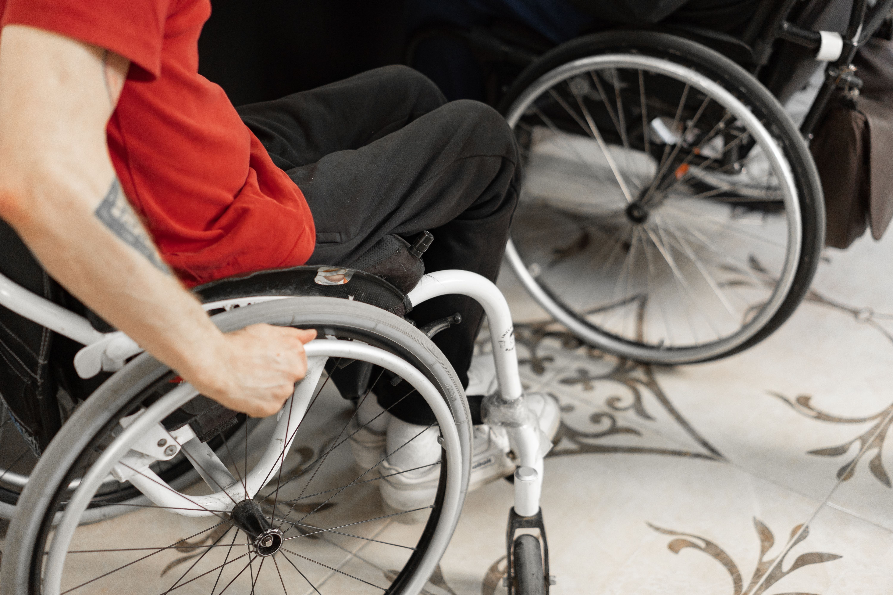

APPOINTMENT TRAVEL
Your visit.
Your journey, planned.
Give the travel details the same care as the appointment. Work through boarding, arrival, and getting home before the day begins.

OUTPATIENT / THERAPY / REGULAR TREATMENT
Arrive with the
details worked out.
Appointment-day travel involves more than the pickup time. Allow for boarding, the journey, and finding the right entrance.
Discuss the hospital or clinic location, your mobility device, and the assistance you prefer. Share any companion or caregiver arrangements at the start.
Plan an appointment journeyUse the appointment-day plannerWHO THIS SERVICE IS FOR
A plan for your
appointment day.
For wheelchair users, senior passengers, caregivers, and people arranging non-emergency travel to clinics, rehabilitation, therapy, or regular treatment visits.
What to discuss with the provider
- A suitable accessible vehicle, ramp or lift, and wheelchair securement.
- Companion seating, luggage space, and cabin comfort.
- The boarding assistance you prefer and the driver’s relevant training.
- Pickup, arrival allowance, return arrangements, and a confirmed quote.
These arrangements depend on the assigned vehicle and provider. Medical care during travel is not arranged through this website.
A LITTLE PREPARATION HELPS
Before you leave.
Before you return.
Keep the outbound and return arrangements together, with a contact person for any changes.
The outbound journey
- Appointment details
- Bring the clinic name, address, appointment time, and entrance information.
- Boarding and seating
- Confirm device compatibility, ramp or lift requirements, securement, and companion.
- Arrival allowance
- Discuss how early to arrive, including boarding time and getting to the reception desk.
The journey home
- Return pickup
- Agree the meeting point and whether the time is fixed or confirmed after the visit.
- Changes on the day
- Keep the provider’s contact details ready if the appointment runs late or ends early.
- Waiting arrangements
- Check whether waiting is available, any charges, and what happens if the schedule.
CLEAR COSTS BEFORE COMMITTING
Ask for the complete fare.
Request a quote for your own route and accessibility requirements. Agree the total and terms directly with the provider.
| Fare component | What to confirm |
|---|---|
| Outbound journey | Pickup and destination, boarding assistance, companions, and the quoted fare. |
| Return journey | Whether the return fare is included or quoted separately, and how pickup is arranged. |
| Waiting time | Any included waiting allowance, additional charges, and limits on availability. |
| Changes or cancellation | Notice periods, applicable fees, and arrangements if the appointment time changes. |
| Recurring dates | How each journey is confirmed, payment arrangements, and terms for schedule changes. |
A CONVERSATION WORTH HAVING
Tell us what helps you
feel prepared.
Whether it’s a companion, a familiar pickup point, or extra time for boarding, explain what works for you. Ask the provider to confirm what they can accommodate.
Call (503) 555-0148 to discuss your needsCOMMON APPOINTMENT-DAY QUESTIONS
Make room for the “what ifs.”
Can a caregiver travel with me?
Include the caregiver in the passenger count and confirm available seating. Share any luggage or equipment needs before agreeing the ride.
Can I stay in my wheelchair during the journey?
This depends on the device and the assigned vehicle. Confirm dimensions, weight limits, seating arrangements, and securement compatibility with the provider.
What happens if my appointment runs late?
Contact the provider as soon as you know. Ask whether a revised pickup is possible, and check waiting charges or change terms in advance.
Can I arrange several treatment dates?
Bring a list of appointment dates and return requirements. Discuss a recurring arrangement, with availability and pricing confirmed for each journey.
Is medical support provided during travel?
This website does not arrange emergency response or medical treatment. Discuss medical-support requirements separately with the appropriate care provider.
START WITH YOUR NEXT APPOINTMENT